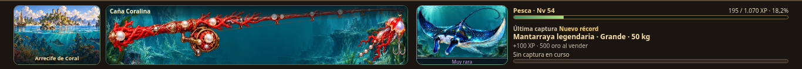
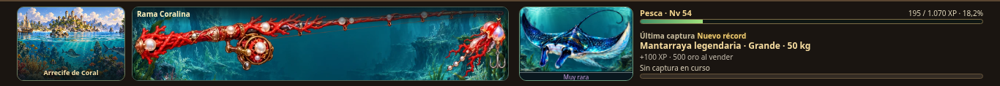
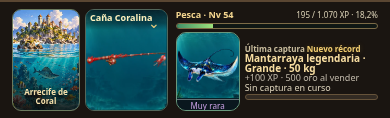
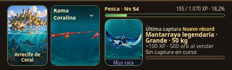
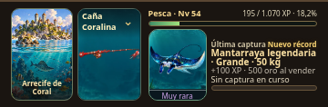
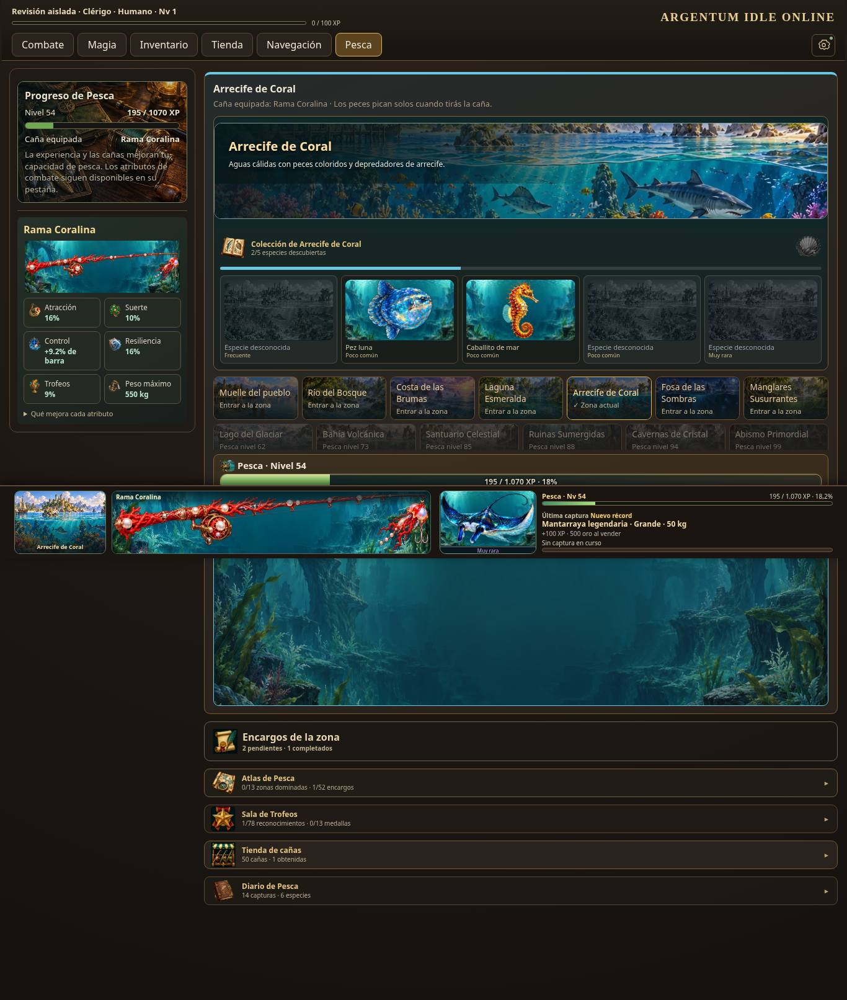
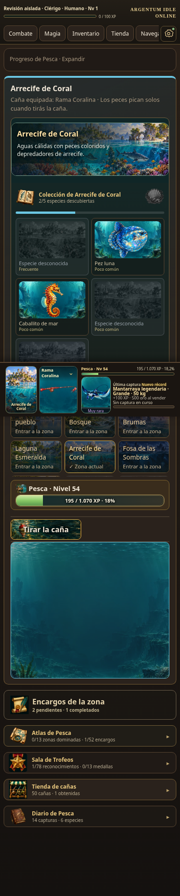
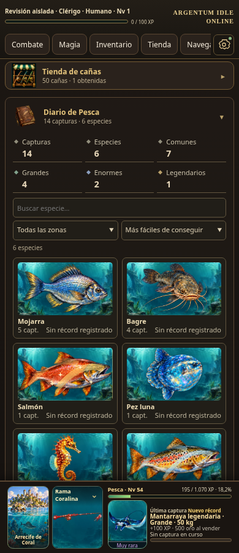
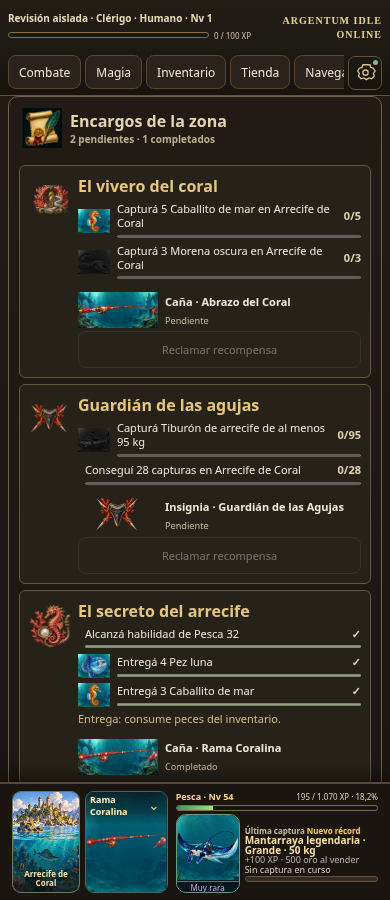

Jugar · Cambios y nombres de cañas
Capturas de Chromium con perfiles aislados de prueba; no corresponden a tu partida.
El récord absoluto puede pertenecer a Común. Cada filtro muestra su propia marca, sin copiar la mayor a las demás categorías.
Antes

Después

Antes

Después

Antes

Después



